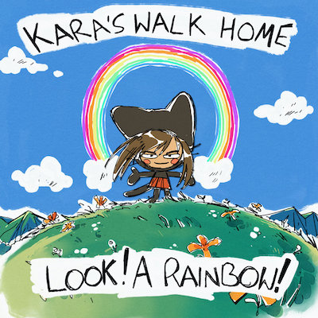

Every once in a while I’ll come across an album that scratches an itch. Something I’ve been waiting for but would never have been able to explain.
Look! A Rainbow! Is the sophomore album from Los Angeles, California emo/indie/punk/whatever outfit, Kara’s Walk Home. Coming seven years after the release of I Don’t Want to Look at the Stars, the new record makes that obvious with reflection and growth at its core.

The album begins with “Highway,” a nearly ten minute song that’s captivating the entire time. Clear from the beginning, the album is ditching the nihilistic themes found so frequently in emo and instead pleading for the listener to see the good in life.
“I never really wanted to live forever, but I changed my mind
It’s not that I expect that to ever happen, I’ve just got a lot I’d like to do” - “Highway”
The album shines in its direct lyrical approach paired with William’s off-putting and demanding vocal style. On “Impressionism” he’s fighting with the idea of letting go, wondering why things can’t make more sense or last forever. This is then followed by “Do you see the thread of light?” where he lists out the “smallest reasons to live” including a callback to their first record:
“And I want to see the stars
When all of this is over” - “Do you see the thread of light?”
Halfway through the album is “Reintroduction Letter,” a cathartic masterpiece highlighting the best of William’s vocal style and writing. The spoken word section reflects on topics of nihilism, the mundaneness of life, and growth:
“In the mirror I caught myself smiling,
and immediately stopped,
somehow feeling embarrassed”
...
“You hate to admit when something like that makes you pick up the phone, huh?
It just got me thinking, too
Sometimes I just find myself wondering if I’ve really changed at all
I’m still way too opinionated in conversations
I forget important things people tell me
And I just start to worry if I’ve really changed at all” - “Reintroduction Letter”
It’s like the chilling feeling of a vivid memory from when you said something embarrassing. A direct confrontation of social anxieties and the inhibiting power of overthinking.
On the final two songs the album is begging for change, reflection, and a new perspective. The screams are straining and demanding, forcing the listener to not just pay attention but to act.
“Oh god wasn’t the sky so beautiful
I could have cried if I wasn’t so embarrassed” - “Gauge Means Nothing in the Car”
He continues by discussing attempts at building healthy habits, trying to focus on the moment instead of always looking forward, and coming to terms with the way things have worked out.
The album comes to a close with “Dragon Bone Smasher.” Just shy of 4 minutes, it is by far the shortest song on the album. The runtime is complementary to the theme of changing perspectives and finally being able to be content.
“Look! A Rainbow!
I almost missed it because I was annoyed at all the traffic
And I laughed when I saw it”
...
“The moment is never sure so i’ll try not to hold too tightly
And these places will someday change so maybe I will save a picture” - “Dragon Bone Smasher”
I think the genius in this album is its ability to affect anyone differently. If given the opportunity, there are countless interpretations and lessons that could be pulled apart. Additionally, there are songs that can serve simply as emotional release when you need the driving instrumental style or desperate screaming.
Like any album that holds a special place in someone's heart, this came to me at a time when I needed answers. And the irony is it taught me that I didn’t actually need to figure anything out. Instead I should stop focusing on this desperate chase to achieve some definition of success that I’ve created in my head. I don’t want to take things so seriously, but not in a nihilistic way, instead in a way that allows me to appreciate every interaction while being a version of myself that isn’t attempting to appear a certain way.
I want to be honest with myself and everyone in my life. Not to hold back emotions for fear of how it appears. I want my interactions, appearance, and thoughts to be genuine.